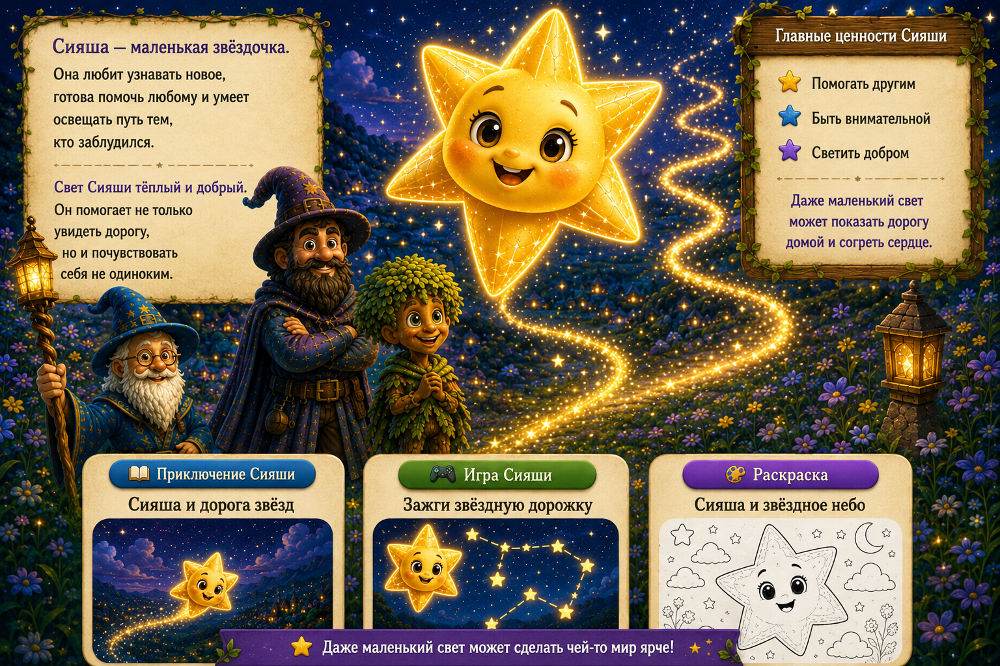

🍯
МЕДОСЛАВ
и его друзья
🗺️ Карта
🧙 Герои
📖 Истории
🎮 Игры
⭐ Раскраски
🌿 Родителям
← Назад к карте

Сияша
Сияша — маленькая звёздочка, которая готова помочь любому осветить путь.
⬅ Вернуться в долину